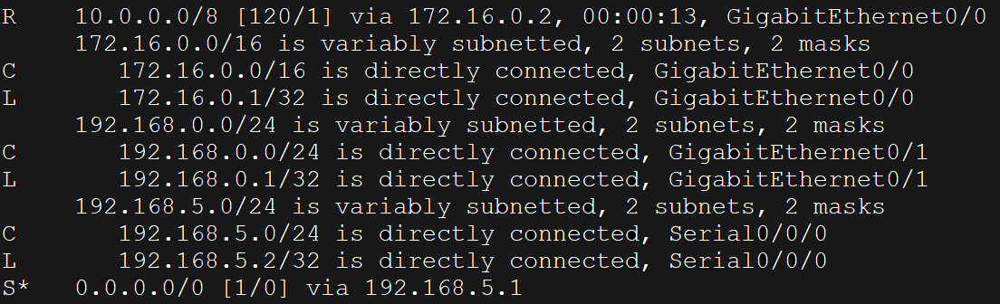

A
B
C
D
Router je L3 ISO/OSI zařízení, jehož účelem je směrovat pakety mezi sítěmi.
Směrování/Routing je proces, který využívá router (směrovač) k určení cesty do daného cíle.
Router si podobně jako switch staví směrovací (routing) tabulku, pomocí které určuje přes jaký interface bude paket vypuštěn.
Směrovací tabulka obsahuje:
Záznamy jsou ve směrovací tabulce určeny buď:
Přímé záznamy jsou do směrovací tabulky přidány automaticky a určují napřímo připojené sítě.
Statický záznam je do tabulky nutno zadat ručně (ignorujeme-li síťovou automatizaci).
Užití:
Dynamický záznam nám určují směrovací protokoly.
Úkolem směrovacích protokolů je správa směrování, vybrání nejlepší cesty do cíle a reakce na výpadky sítí (pojem convergence).
*1. číslo v hranaté závorce je administrative distance, druhé je metrika
Směrovací protokoly se rozlišují dle toho zda-li to směrování probíhá v rámci jednoho autonomního systému (IGP) nebo jestli probíhá mezi několika autonomníma systémama (EGP).
*Autonomní systém (AS) je síť, která je pod kontrolou jedné organizace (Běžně platí, že každý ISP je v jiné AS), každé AS je přiděleno ASN, které ji identifikuje, přidělení má na starosti IANA.
Nejlepší cestu k cíli určuje metrika (čim nižší tím lepší cesta). Metrika je u každého RP určená jinak (RIP používá jako metriku počet HOP, OSPF používá cost).
Jakmile síť využívá vícero protokolů nebo protokol a statickou cestu, tak přednost určuje Administrative Distance.
EGP protokol se momentálně používá hlavně jeden - BGP, tento protokol spadá pod Path-Vector typ protokolů.
IGP protokoly se dále dělí podle toho jaký algoritmus používají k nalezení nejlepší cesty do destinace (Link-State & Distance-Vector protokoly).
Protokoly: RIP, IGRP, EIGRP (také jej najdete jako hybrid a advanced-distance-vector)
Fungují na tom principu, že routery komunikují se sousedními routery a předávají si informace o sítích v jejich dosahu (metriku - vzdálenost a směr - interface - vektor).
Tento druh směrování je nejlepší pro menší a jednoduchý sítě, které nevyžadují mít velké znalosti pro správu.
Tyto protokoly posílají v periodických intervalech aktualizaci celé směrovací tabulky.
Protokoly: OSPF, IS-IS
Fungují tak, že routery si vyměnují informace se všemi ostatními routery a na základě vyměněných informací jsou schopni postavit si mapu topologie celé sítě.
Jsou vhodné především pro větší sítě, které vyžadují odbornou správu.
Tento druh protokolů aktualizuje směrovací tabulku pouze při detekci změny, přičemž ji nemění celou ale jen část potřebnou ke změně.
Tyto protokoly zpravidla využívají Dijkstra algoritmus.
| Route/Protokol | Default Administrative Distance |
|---|---|
| Napřímo připojený | 0 |
| Statický | 1 |
| External BGP | 20 |
| Internal EIGRP | 90 |
| OSPF | 110 |
| RIP | 120 |
| External EIGRP | 170 |
| Internal BGP | 200 |
| Neznámý | 255 |
S dynamickými routing protokoly se pojí i určitá terminologie, ke které v ostatních kapitolách odkazuji.
Router ID slouží jako identifikátor routeru, kterýho se využívá v některých dynamických routing protokolech (EIGRP ale i OSPF).
Zapisuje se v IPv4 formátu.
WILDCARD Mask je invertovaná subnet mask, která určuje rozsah IP adresy a běžně se používá v routing protokolech (EIGRP a OSPF).
0 nám ve WILDCARD Mask nám říká, že korespondující bity se musí shodovat.
Příkladem nám může být:
192.168.1.25/24 --> 255.255.255.0 (Subnet Mask) --> 0.0.0.255 (Wildcard mask)
| Příkazy | Popis | Mód |
|---|---|---|
| show ip route | zobrazí směrovací tabulku | EXEC |
| show ip protocol | zobrazí informace o konfiguraci routing protokolu | EXEC |
| distance {0-255} | Přenastaví administrative distance u daného protokolu | config-router |
Router je zařízení, které provádí routing operaci podle routing tabulky.
V routing tabulce můžeme najít connected záznamy, static záznamy a routing protokol záznamy.
Routing protokol záznamy se dělí podle toho zdali jsou v rámci jednoho nebo více autonomních systémů na IGP a EGP.
IGP jsou routing protokoly v jednom automním systému, tyto se dělí dále podle algoritmu na distance-vector a link-state.
Distance-vector posílá routing data jen svým sousedům, link-state protokoly jsou postavené na principu toho, že routery si staví celkovou mapu sítě (všechny routery mají stejné záznamy).
EGP jsou routing protokoly ve více automních systémech (používá se například mezi ISP), zde je jenom jeden typ - path-vector, kam patří protokol BGP.
Jestliže v síti funguje vícero routing protokolů nebo máme případ routing protokol - statická cesta, prioritu určuje administrative distance.
A
B
C
D